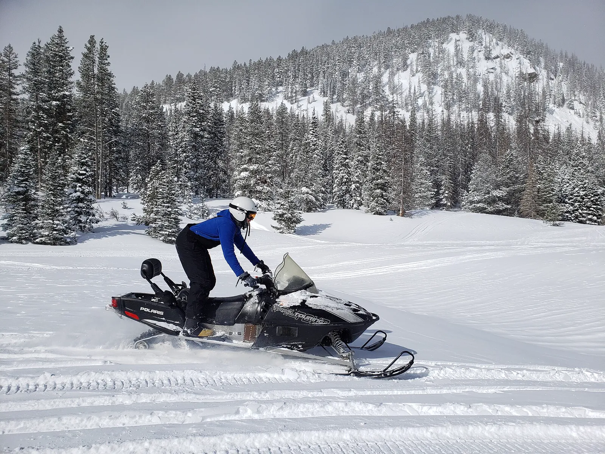

Excursiones en nieve en Caviahue

Caviahue y alrededores · Invierno
Motos de nieve, caminatas con raquetas y culipatín para los chicos: el bosque de araucarias y el pueblo cubiertos de blanco se recorren de otra manera.
Con la nieve, el bosque de araucarias que rodea al pueblo se convierte en otro paisaje. Las motos de nieve llevan a miradores y lugares que en invierno no se alcanzan a pie; con raquetas se camina sobre la nieve profunda en silencio, y el culipatín es la diversión asegurada para los chicos (y no tan chicos).
Las excursiones salen con prestadores habilitados del pueblo. Consultanos y te ayudamos a organizarlas durante tu estadía.
Ubicación
Consultanos por los paseos disponibles y su punto de salida.
Tu lugar en Caviahue
Casas, cabañas, departamentos y hostal boutique para disfrutar de la Patagonia con tu familia, amigos o pareja. Reservá online o por WhatsApp.